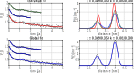

Global fit of parametric time-domain model¶
%================================================================
% DeerAnalyis2
% Example: Parametric model global fit
% Fit a time-domain parametric model including distribution and
% background function to three different signals by means of global
% fitting
%================================================================
clear,clc,clf
%Parameters
%----------------------------------------------
k = 0.3;
lam = 0.35;
r1 = 3;
r2 = 4;
FWHM1 = 0.3;
FWHM2 = 0.3;
A1 = 0.3;
% Preparation
%----------------------------------------------
t1 = linspace(0,5,200);
t2 = linspace(0,2,100);
t3 = linspace(0,3,150);
r = linspace(2,5,100);
Pparam = [r1 FWHM1 r2 FWHM2 A1];
P = rd_twogaussian(r,Pparam);
trueparam = [lam k Pparam];
B1 = td_exp(t1,k);
B2 = td_exp(t2,k);
B3 = td_exp(t3,k);
%Generate two signals with different length,SNR, but same background
V1 = dipolarsignal(t1,r,P,'Background',B1,'noiselevel',0.05,'moddepth',lam);
V2 = dipolarsignal(t2,r,P,'Background',B2,'noiselevel',0.01,'moddepth',lam);
V3 = dipolarsignal(t3,r,P,'Background',B3,'noiselevel',0.02,'moddepth',lam);
% Fitting
%----------------------------------------------
% Construct time-domain model function including background
mymodel = @(t,p) td_exp(t,p(2)).*((1- p(1)) + p(1)*dipolarkernel(t,r)*rd_twogaussian(r,p(3:end)));
% Define lower/upper bounds and initial guess of parameters
upper = [1 200 20 5 20 5 1];
lower = [0 0 1.0 0.2 1.0 0.2 0];
param0 = [0.5 0.5 2 0.2 3.5 0.4 0.4];
%Run global fit
[param,Vfit] = fitparamodel({V1,V2,V3},mymodel,{t1,t2,t3},param0,'Upper',upper,'Lower',lower);
Pfit = rd_twogaussian(r,param(3:end));
%Fit the individual traces for comparison
[param1,Vfit1] = fitparamodel(V1,mymodel,t1,param0,'Upper',upper,'Lower',lower);
[param2,Vfit2] = fitparamodel(V2,mymodel,t2,param0,'Upper',upper,'Lower',lower);
[param3,Vfit3] = fitparamodel(V3,mymodel,t3,param0,'Upper',upper,'Lower',lower);
Pfit1 = rd_twogaussian(r,param1(3:end));
Pfit2 = rd_twogaussian(r,param2(3:end));
Pfit3 = rd_twogaussian(r,param3(3:end));
%Plotting
%----------------------------------------------,
subplot(221)
plot(t1,V1,'k.',t1,Vfit1,'r',t2,V2+1/2,'k.',t2,Vfit2+1/2,'b',t3,V3+1,'k.',t3,Vfit3+1,'g','LineWidth',1)
grid on,axis tight,box on
xlabel('time [\mus]')
ylabel('V_i(t)')
title('Individual fit')
subplot(222)
plot(r,P,'k',r,Pfit1,'r',r,Pfit2,'b',r,Pfit3,'g','LineWidth',1)
grid on,axis tight,box on
xlabel('distance [nm]')
ylabel('P(r) [nm^{-1}]')
title(sprintf('\\lambda = %.3f/%.3f k = %.3f/%.3f',param2(1),lam,param2(2),k))
subplot(223)
plot(t1,V1,'k.',t1,Vfit{1},'b',t2,V2+1/2,'k.',t2,Vfit{2}+1/2,'b',t3,V3+1,'k.',t3,Vfit{3}+1,'b','LineWidth',1)
grid on,axis tight,box on
xlabel('time [\mus]')
ylabel('V_i(t)')
title('Global fit')
subplot(224)
plot(r,P,'k',r,Pfit,'b','LineWidth',1)
grid on,axis tight,box on
xlabel('distance [nm]')
ylabel('P(r) [nm^{-1}]')
title(sprintf('\\lambda = %.3f/%.3f k = %.3f/%.3f',param(1),lam,param(2),k))
